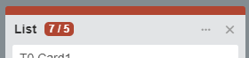
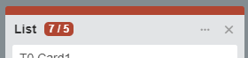
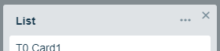
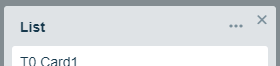
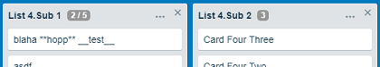
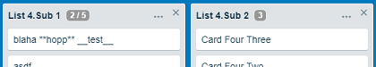

Trello Folds
Sections
Use repeated times to identify sections.
Cards like ## Section and
## Section ### will be identified as sections.
WiP Limits
Add color bars at top of WiP lists to indicate work overflow
Sections will get a top bar when WiP limit is exceeded.


Always count cards
Show card count for lists without a WiP limit
Card count will not show for lists without WiP limits.


Combining lists
Enable combine list feature
It is not possible to combine lists.


Compact Mode
Width for compact lists (list default width is 272)
Compact List
Compact card
View State
Remember view states
Next time you open the board lists and sections will be in the same state,
i.e. expanded or collapsed, depending on how you left them.
associated with the current board.
Pressing Clear view state removes all view state data associated
with the current board. The board will be reloaded and all lists and
sections will be expanded.
View state data is stored for 0 board(s).
Dump the view state to the browser console.
Intended
mainly for debugging purposes. (The console is accessible in the developer tools.)
If you have a feature request or issue to report please visit the
extension GitHub page. Here you can also find some documentation and the code for the extension.